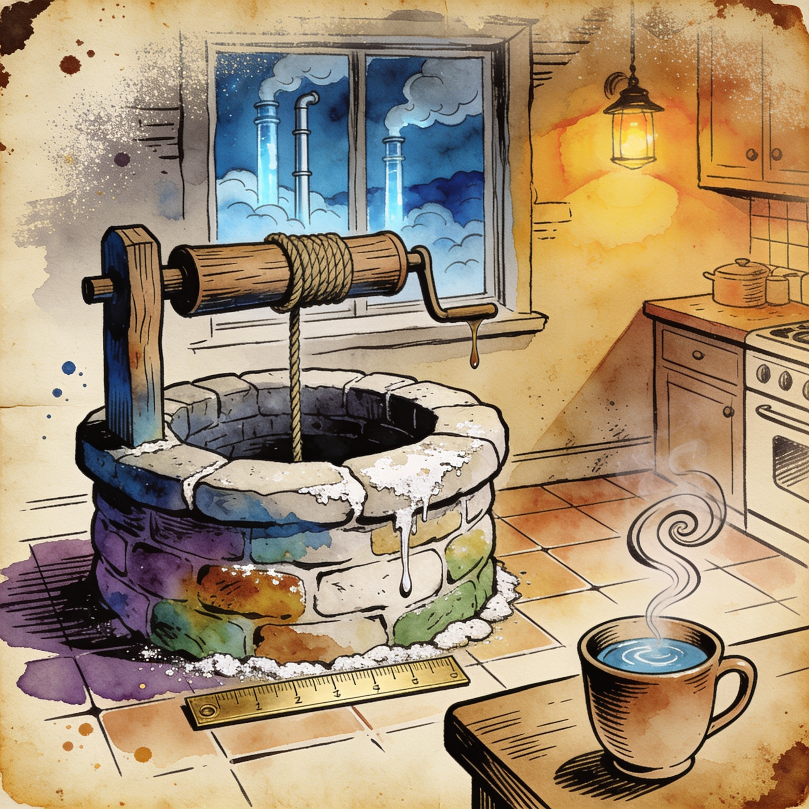

Local models in ChatGPT
Ollama v0.34.0-rc1 serves Ollama-hosted models directly inside ChatGPT Desktop
Ollama's new release candidate lets the ChatGPT Desktop client run Ollama-hosted open models, with setup handled from the Ollama app on macOS, so users keep the client they already use while inference stays on local hardware. The same release adds OpenAI-compatible client tool search and response compaction, fixes images breaking through compacted responses, and improves structured-output performance on Apple Silicon.